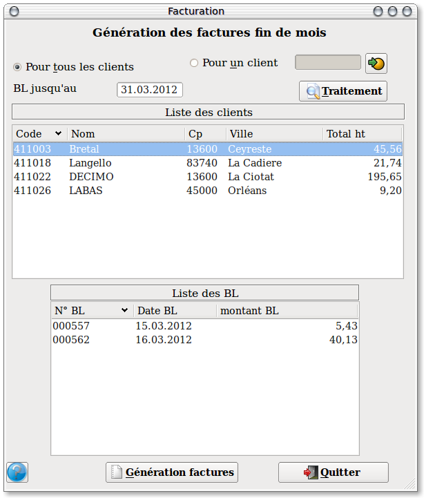

~ Facturation Laurux ~

~ Facturation Laurux ~ |
|
|
|
Facturation fin de mois
Principe : La facturation fin de mois permet de regrouper sur une facture unique l'ensemble des bons de livraisons saisis durant le mois (ou une autre période). Imaginons un client qui vient plusieurs fois par mois prendre de la marchandise, et pour être plus parlant encore, imaginons qu'il vienne au moins une fois par jour. Il ne voudra certainement pas une facture à chaque enlèvement de marchandises, donc le programme des factures fin de mois va servir à regrouper l'ensemble des bl du mois dans une facture unique.
A partir de cet écran on va pouvoir sélectionner le ou les
clients à traiter ainsi que la période correspondante. Par exemple on
pourrait ne sélectionner qu'un seul client qui souhaiterait avoir sa
facture le 20 du mois.
La date proposée est celle du dernier jour du mois.
Une fois ces données saisies ont clique sur le bouton " Traitement " pour faire apparaitre dans la partie supérieure de l'écran l'ensemble des clients qui recevront une facture avec le montant HT de celle-ci.
Si on clique sur un client on aura alors le détail de ses bons de livraison dans la partie basse.
Que peut-on faire à partir de ces écrans ?
Dans notre exemple on voit que le client Simenon va avoir une facture de 2.51 ht, or il n'est pas souhaitable d'envoyer une facture dont le montant est disons inférieur à 5 Euros. Et bien on va supprimer le client Simenon de la liste en le sélectionnant puis en tapant 'Suppr'.
Notre client Canine du sud ouest aura lui une facture regroupant 3 bons de livraisons, or les bons N° 407 et 430 sont en litige et on ne souhaite pas les inclures dans la facture. La suppression des bons va se faire comme pour les clients, c'est à dire qu'on va sélectionner ce qu'on veut supprimer puis on appuyera sur la touche 'Suppr'.
Lorsque le travail de préparation sera terminé on cliquera sur le bouton "Génération factures" pour procéder à l'impression des documents.
Important :
La facturation fin de mois ne gère pas les factures pour les clients
exonérés de TVA. Il faut obligatoirement passer par le programme de
facturation pour imprimer ce type de facture.
----------------------------------------------------------------------------------------------------------------------